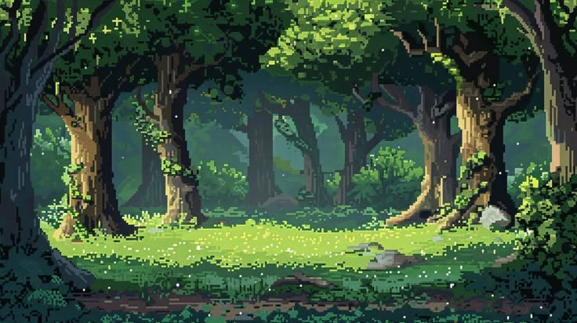
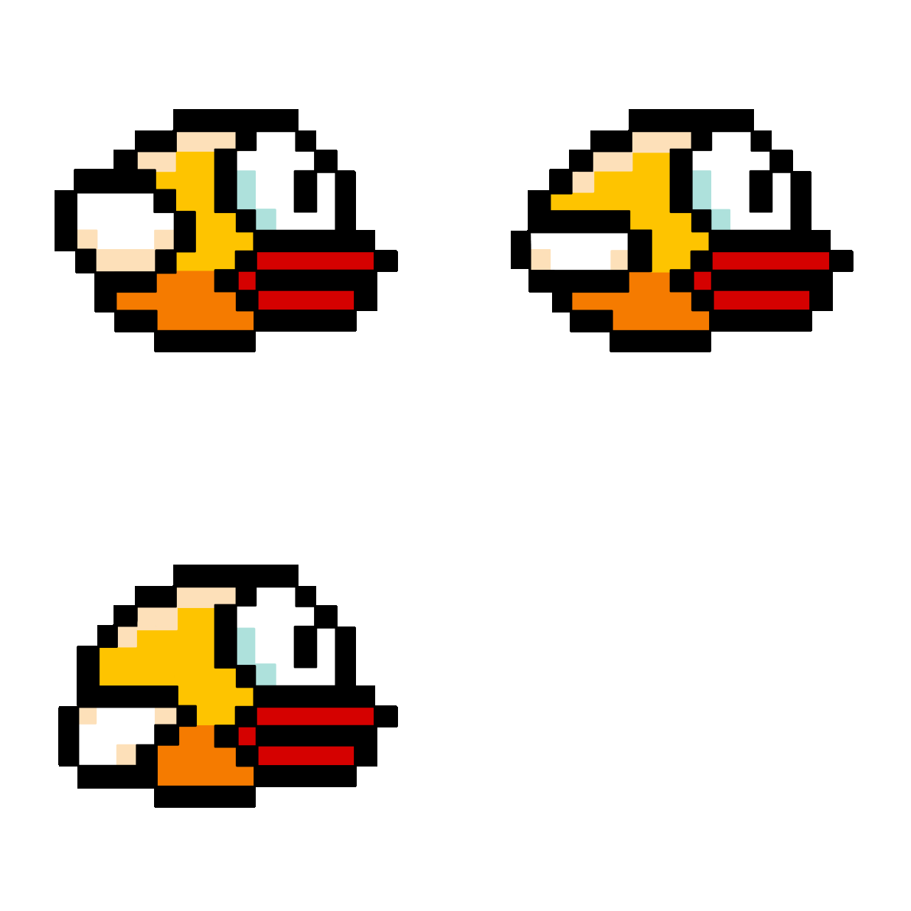
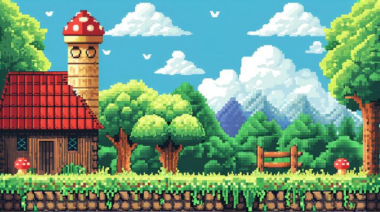

BTS SIO
VEILLE TECHNOLOGIQUE
LUA
Du scripting Roblox à un mini-jeu Flappy Bird conçu avec LOVE2D et mes propres assets.
BTS SIO
Du scripting Roblox à un mini-jeu Flappy Bird conçu avec LOVE2D et mes propres assets.
Sommaire

Comprendre Lua pour l’utiliser de manière concrète dans mes projets de jeu.
Introduction
Dans le cadre de ma formation en BTS SIO, j’ai réalisé une veille technologique portant sur le langage de programmation Lua. Le choix de ce langage n’est pas anodin : il s’inscrit directement dans un projet personnel de développement de jeu vidéo sur la plateforme Roblox, qui utilise une version adaptée de Lua pour le scripting de ses environnements interactifs.
Ainsi, cette veille ne se limite pas à une simple collecte d’informations théoriques. Elle s’inscrit dans une démarche concrète, visant à comprendre un langage dans le but de l’utiliser dans un projet réel. Pour renforcer cette approche pratique, j’ai également développé un jeu inspiré de Flappy Bird en utilisant le framework LÖVE (Love2D), tout en créant moi-même l’ensemble des assets graphiques. Cette double approche, théorique et pratique, m’a permis d’approfondir ma compréhension du langage Lua et de ses usages.


Présentation du langage
Le langage Lua a été créé en 1993 par des chercheurs de la PUC-Rio, au Brésil. Son nom signifie « lune » en portugais, ce qui reflète une volonté de simplicité et d’élégance dans sa conception.
Lua est un langage interprété, léger et portable, conçu à l’origine pour être intégré dans d’autres programmes. Contrairement à des langages plus généralistes, il est rarement utilisé seul pour développer des applications complètes. Il est plutôt conçu comme un langage embarqué, permettant d’ajouter des fonctionnalités dynamiques à un logiciel principal. Sa syntaxe est volontairement simple, ce qui le rend accessible, tout en restant suffisamment puissant pour gérer des systèmes complexes.
Une des particularités de Lua est son système basé sur les tables, qui permet de simuler différents paradigmes de programmation, notamment l’orienté objet. Cette flexibilité en fait un langage polyvalent malgré sa taille réduite.
Simplicité, lisibilité, rapidité et faible consommation de ressources.
Lua est surtout pensé comme langage embarqué plutôt que pour des applications complètes.
Usages et analyse
Lua est principalement utilisé dans des domaines où la performance et la légèreté sont essentielles. Le secteur du jeu vidéo constitue l’un de ses principaux champs d’application. Par exemple, la plateforme Roblox repose entièrement sur Lua pour permettre aux utilisateurs de créer leurs propres jeux et expériences interactives. De la gestion des interactions à la logique multijoueur, Lua est au cœur du fonctionnement de nombreux projets développés sur cette plateforme.
D’autres jeux connus comme World of Warcraft ou Garry’s Mod utilisent également Lua pour gérer certains aspects du gameplay ou de l’interface utilisateur. Cela montre que Lua est particulièrement adapté aux systèmes nécessitant de la flexibilité et des modifications rapides.
En dehors du jeu vidéo, Lua est aussi utilisé dans des logiciels comme Wireshark pour l’analyse réseau, ou Adobe Lightroom pour le développement de plugins. Il est également présent dans les systèmes embarqués, notamment dans les objets connectés, grâce à sa faible consommation de ressources.
Jeux vidéo, scripts d’interface, outils d’analyse réseau, plugins et systèmes embarqués.
Lua est pertinent lorsque la flexibilité, la rapidité d’intégration et la légèreté sont recherchées.
Analyse technique et évolution
D’un point de vue technique, Lua présente plusieurs avantages significatifs. Sa légèreté en fait un langage extrêmement rapide, souvent utilisé dans des contextes où les performances sont critiques. De plus, sa syntaxe simple permet une prise en main rapide, ce qui est particulièrement intéressant pour les développeurs débutants ou pour des projets nécessitant une implémentation rapide.
Lua est également conçu pour être facilement interfaçable avec des langages comme le C ou le C++, ce qui permet de combiner performance et flexibilité. Cette caractéristique est essentielle dans le développement de moteurs de jeux ou de logiciels complexes.
Cependant, Lua présente aussi certaines limites. Sa popularité est moindre comparée à des langages comme Python ou JavaScript, ce qui implique une communauté plus restreinte et moins de ressources disponibles. De plus, il dispose de peu de frameworks modernes, ce qui peut compliquer le développement de projets de grande envergure.
Depuis sa création, Lua a connu plusieurs évolutions, notamment avec les versions 5.x qui constituent aujourd’hui les versions stables du langage. Une version particulière, appelée LuaJIT, permet d’améliorer considérablement les performances grâce à une compilation Just-In-Time, rapprochant ainsi Lua des performances du langage C.
Actuellement, Lua connaît un regain d’intérêt grâce à des plateformes comme Roblox, qui démocratisent son utilisation.
Selon lua.org, Lua 5.5.0 est sortie le 22 décembre 2025 et Lua 5.4.8 le 4 juin 2025.
Méthodologie de veille
Pour réaliser cette veille technologique, j’ai mobilisé différentes sources d’information. J’ai consulté la documentation officielle du langage, des forums spécialisés, ainsi que des plateformes comme GitHub et Stack Overflow. Ces sources m’ont permis de suivre l’évolution du langage, d’identifier ses usages actuels et de comprendre les problématiques rencontrées par les développeurs.
J’ai également utilisé des outils de veille comme Google Alerts afin de rester informé des actualités liées à Lua. Enfin, des vidéos et tutoriels en ligne m’ont aidé à approfondir mes connaissances de manière pratique.

Mise en pratique et conclusion
Afin de compléter cette veille, j’ai développé un jeu inspiré de Flappy Bird en utilisant le framework LÖVE. Ce projet m’a permis de mettre en pratique les concepts étudiés et de mieux comprendre le fonctionnement de Lua dans un contexte réel.
J’ai notamment implémenté des mécanismes tels que la gestion de la gravité, des collisions, du score et des animations. De plus, j’ai conçu moi-même les assets graphiques du jeu, ce qui m’a permis de travailler à la fois sur l’aspect technique et créatif du projet.
Cette expérience a été particulièrement enrichissante, car elle m’a permis de passer de la théorie à la pratique, tout en consolidant mes compétences en développement.
Cette veille technologique m’a permis de constater que Lua est un langage à la fois simple et puissant. Il est particulièrement adapté aux projets de petite à moyenne envergure, ainsi qu’aux systèmes embarqués et au développement de jeux vidéo.
En conclusion, le langage Lua constitue un choix pertinent dans le cadre de mon projet de développement sur Roblox. Cette veille technologique m’a permis d’acquérir une compréhension approfondie de ce langage et de ses applications.
Cependant, son utilisation reste limitée dans certains domaines en raison de son manque de popularité et de l’absence de certains outils modernes.
Le développement d’un jeu avec le framework LÖVE a renforcé cette compréhension en apportant une dimension concrète à mon apprentissage.
Sources
Google Alerts, GitHub, Stack Overflow, documentation officielle et tutoriels en ligne.
lua.org indique que Lua 5.5.0 est sortie le 22 décembre 2025 et que Lua 5.4.8 est sortie le 4 juin 2025.